Тёмный «инженерный» интерфейс: почти чёрный фон, тонкие линии, монохром и один акцент — лайм. Ниже все экраны в текущем состоянии: крупные превью, иконочные действия, жёсткий 16:9 у плеера и единая скрываемая панель с подписями.
aspect-ratio: 16 / 9 — макет не прыгает при загрузке.Общая форма для входа и регистрации. Первый аккаунт становится администратором.
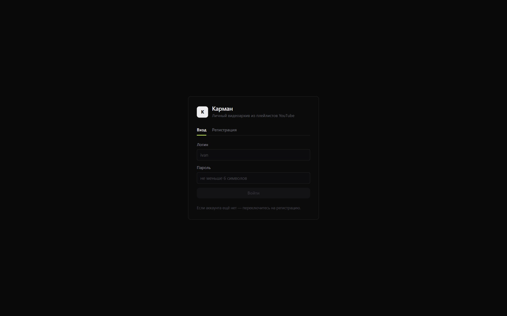
Общая лента открытых плейлистов. Крупные превью, длительность на кадре, статус и срок хранения в подвале карточки. Только поиск и владелец — без лишних переключателей и счётчиков.
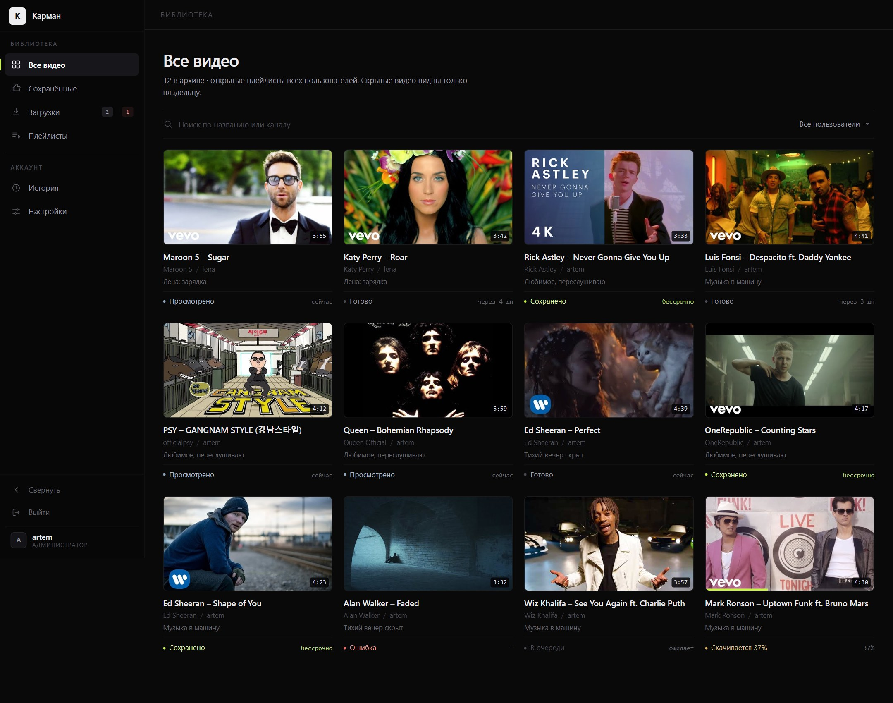
Витрина плейлистов: обложка из первого (или последнего) видео, название, владелец, количество роликов, очередь и ошибки. Добавление — по кнопке «Добавить», техническое редактирование — по кнопке с ключом.
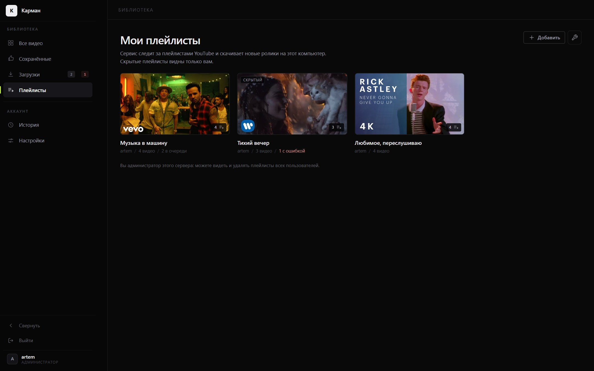
Шапка с действиями владельца и та же сетка карточек. Скрытый плейлист помечен, счётчики очереди видны на превью.
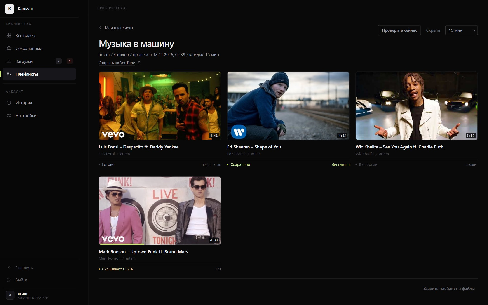
Плеер строго 16:9. Под ним — один блок «Сведения»; в его шапке действия-иконки: сохранить, дизлайк с удалением, удалить сейчас. Сохранённое видео помечено лаймовым состоянием и хранится бессрочно.
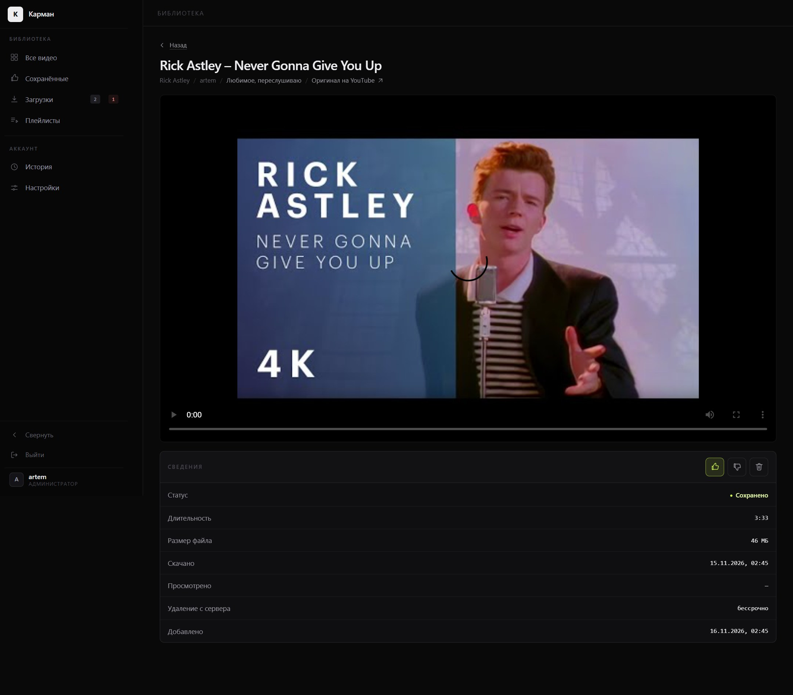
Файла нет — остаётся причина удаления и ссылка на оригинал. Действия владельца скрываются, чтобы не предлагать невозможное.
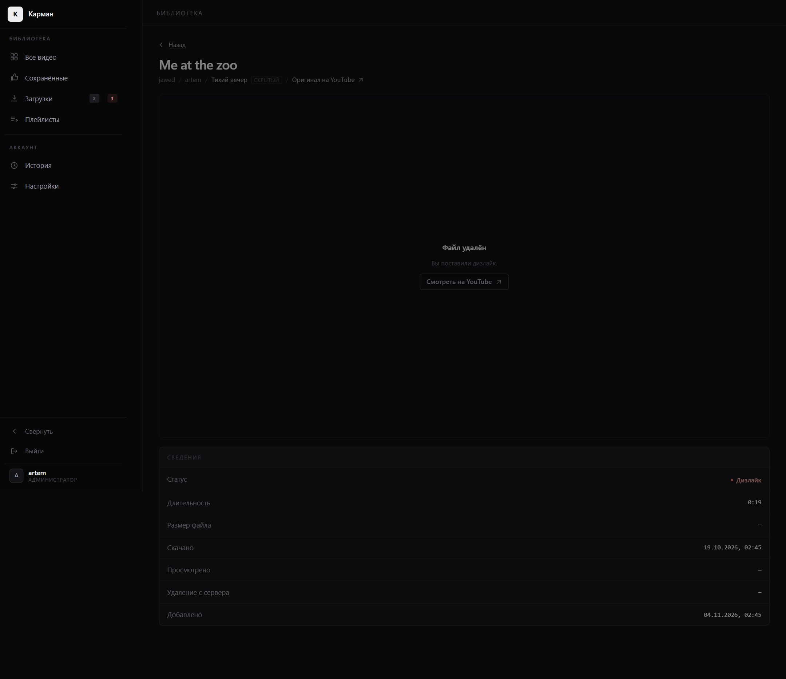
Записи бессрочные, с процентом просмотра и ссылкой на YouTube. Есть текстовый режим и выгрузка .txt.
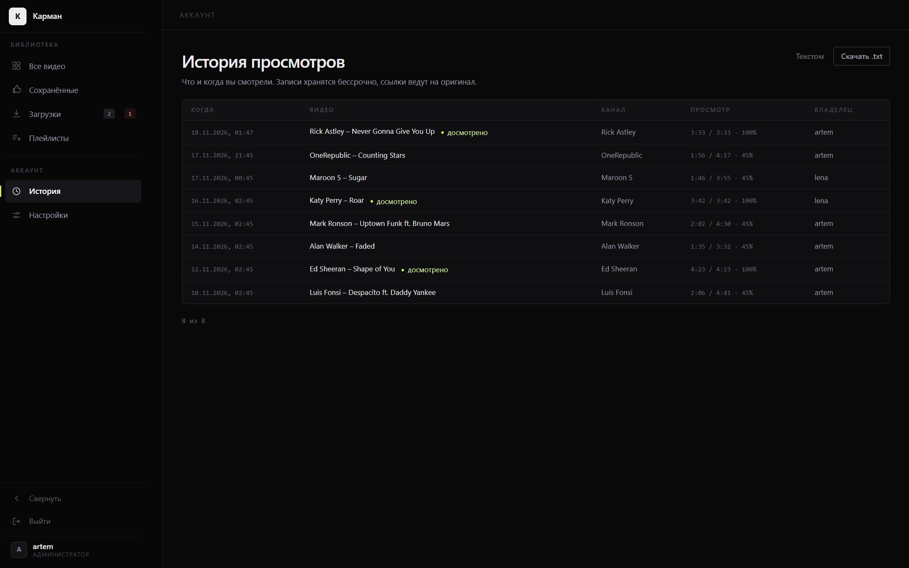
Двухпанельный выбор по мотивам референса: слева параметры со значением, справа вертикальный столбец вариантов, снизу итог и кнопка сохранения. Календаря нет.
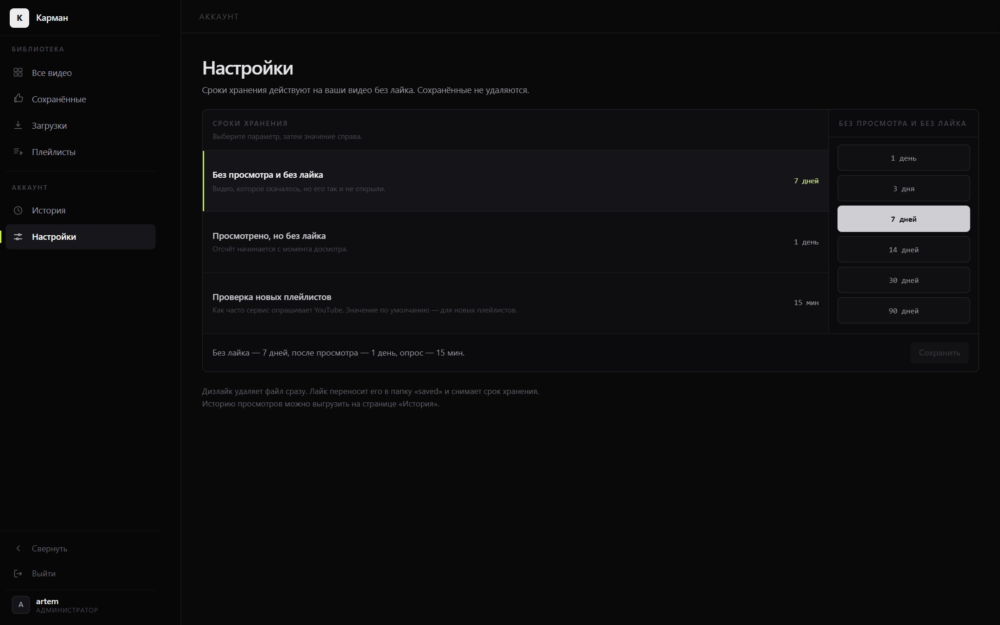
Быстрые срезы библиотеки: лайкнутое хранится бессрочно; в «Загрузках» лежат активные скачивания вместе с ошибками, и каждую ошибку можно отправить на повторную попытку прямо с карточки.
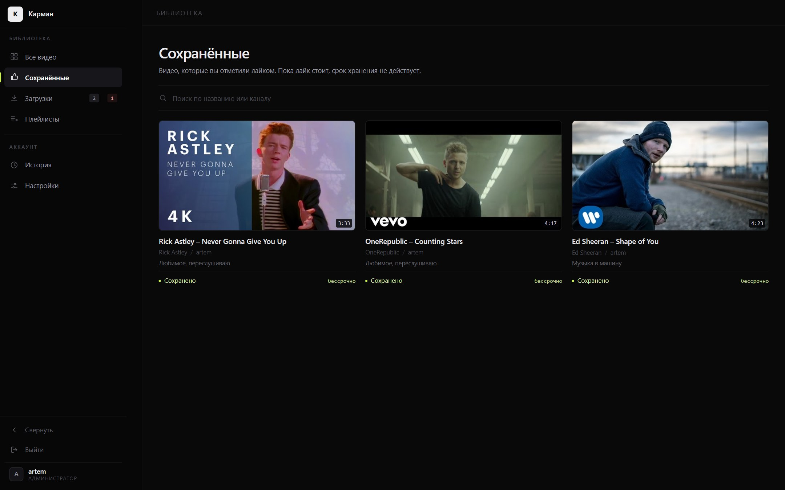
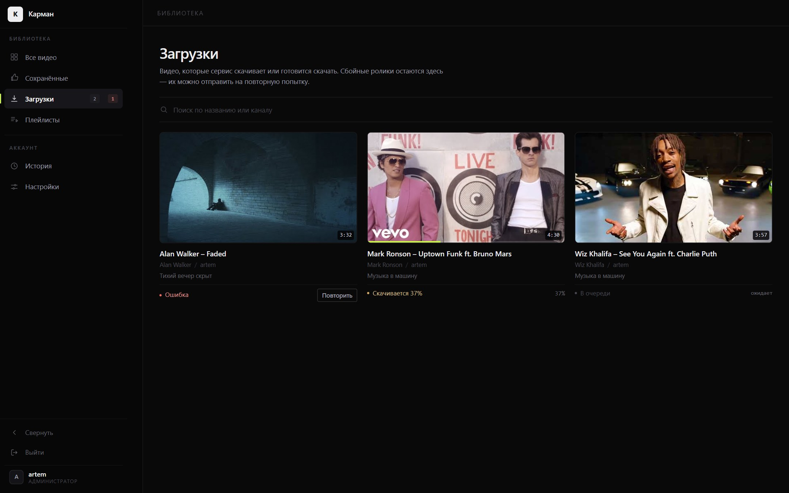
Одна колонка, крупные превью. Меню открывается кнопкой в верхней полосе и закрывается свайпом по затемнению или кнопкой «Свернуть».
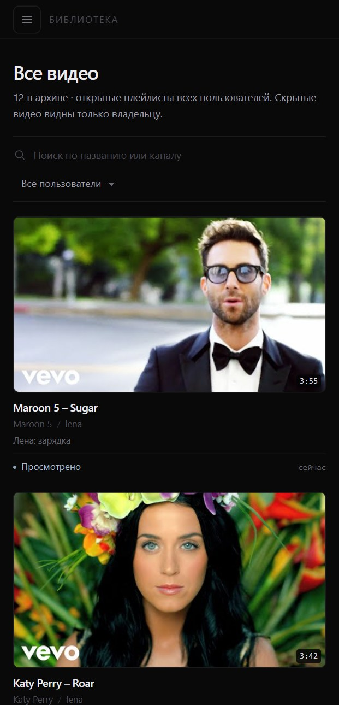
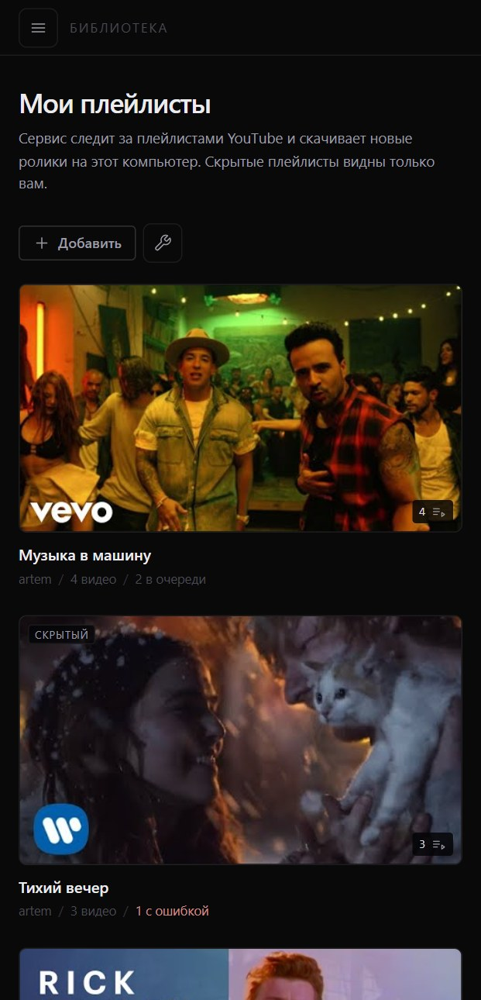
Пример работы выбора: параметр «Проверка новых плейлистов» и вариант в правом столбце. Изменение сразу отражается в итоговой строке, кнопка сохранения активируется только при наличии правок.
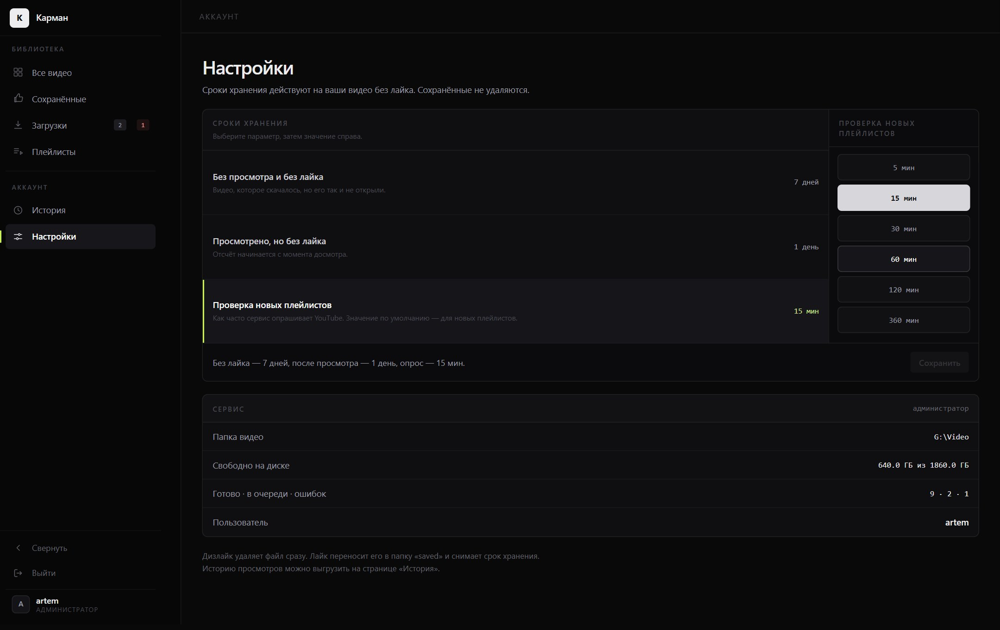
Панель сжимается до узкого рейла с иконками; активный раздел отмечен лаймовой чертой. Развернуть обратно можно той же кнопкой в подвале.
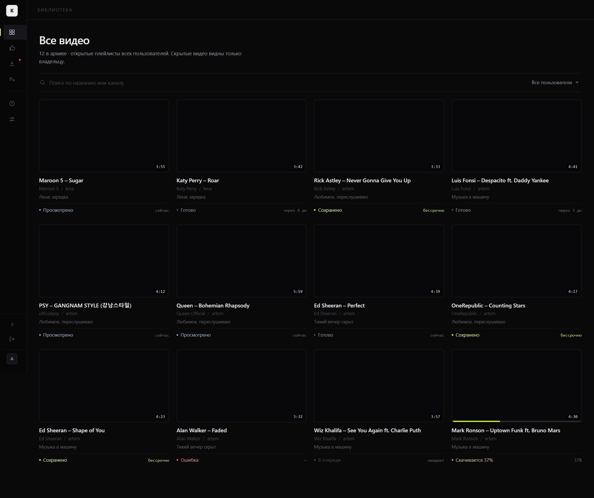
Единая панель поверх контента: группы «Библиотека» и «Аккаунт», подписи, счётчики очереди и ошибок. Аккаунт — в подвале панели.
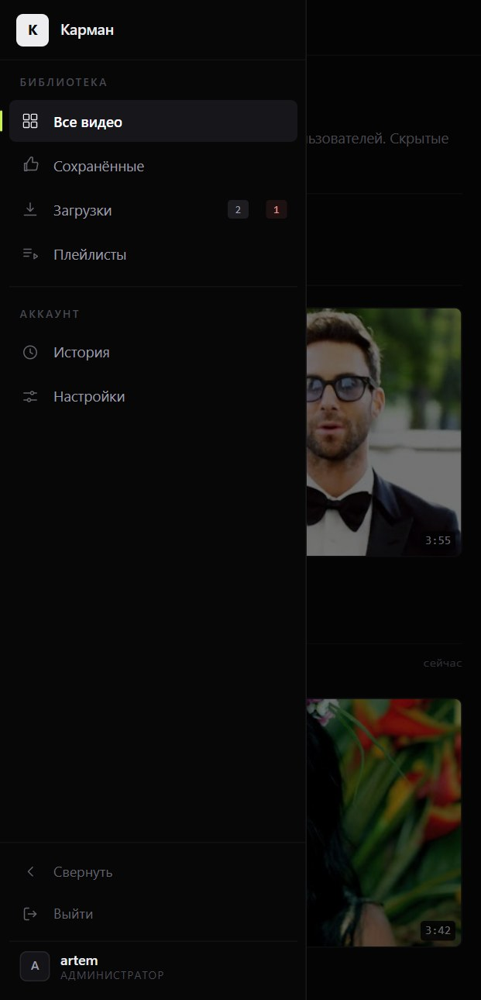
Скрытый режим: список плейлистов слева, параметры справа — название, частота опроса, скрытость, слежение, выбор превью (первое или последнее видео), статистика и удаление. Изменения применяются кнопкой «Сохранить».
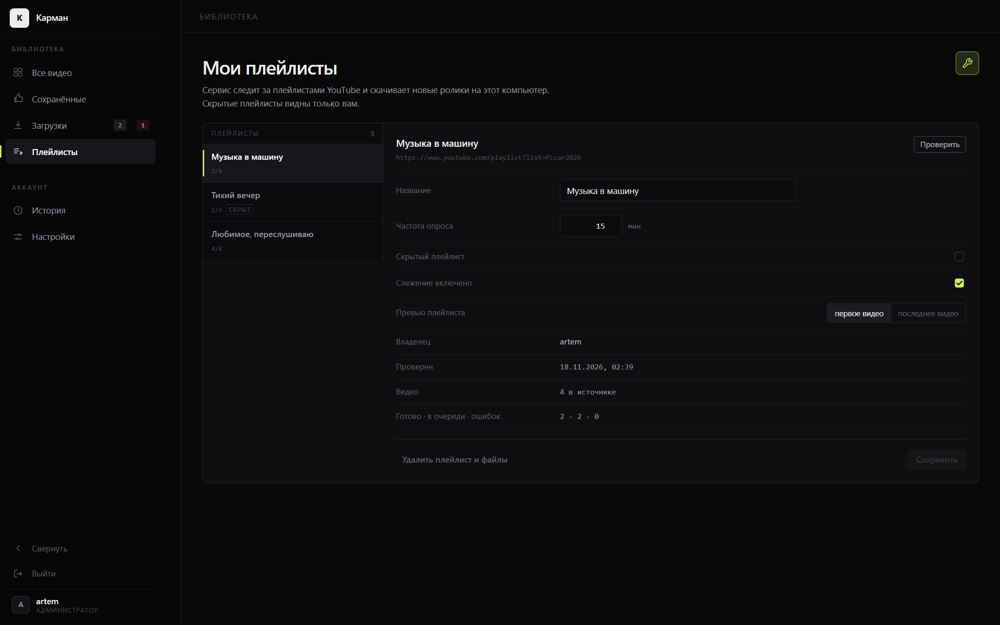